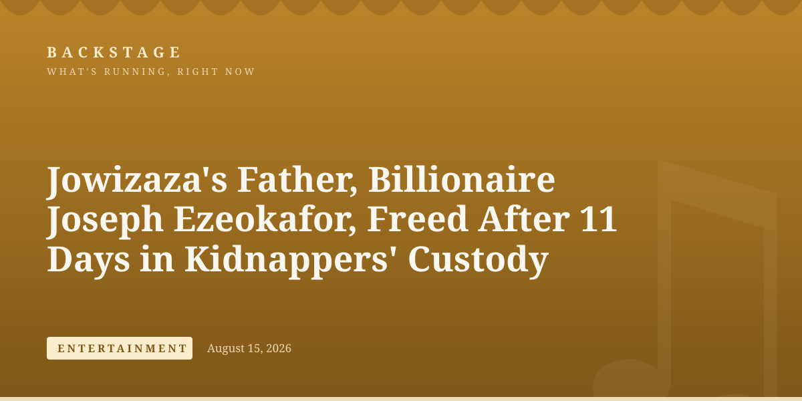
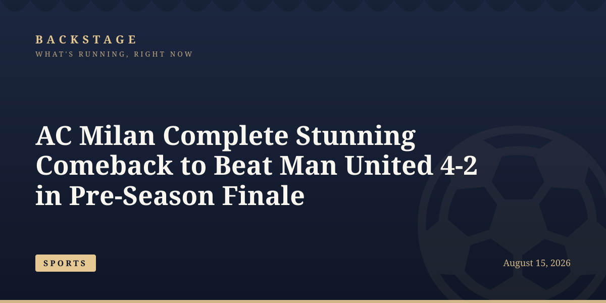
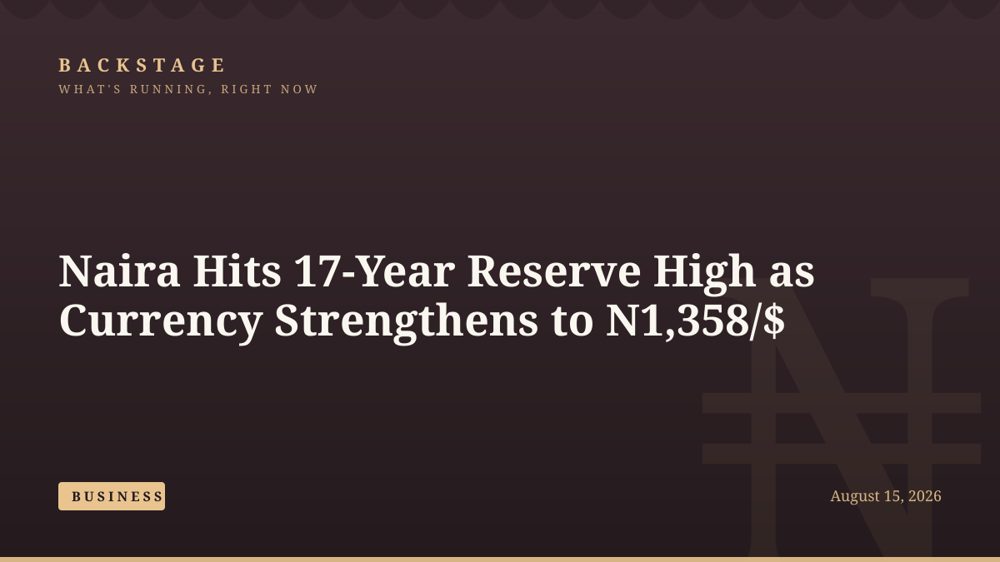
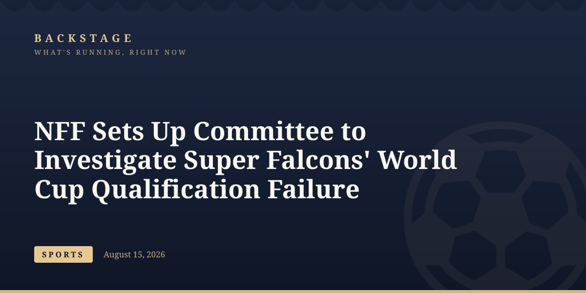
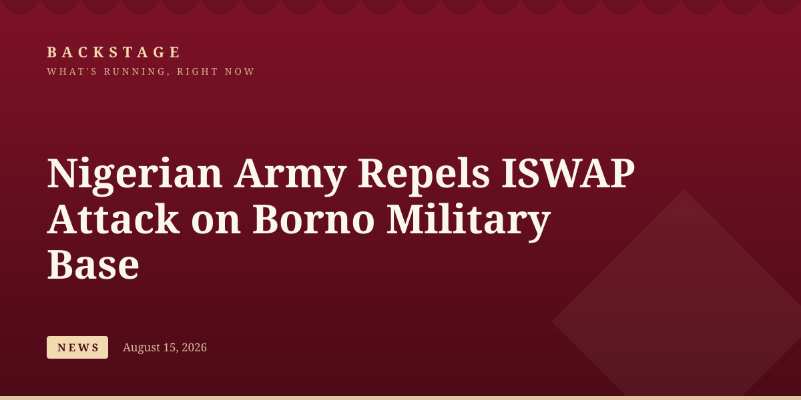
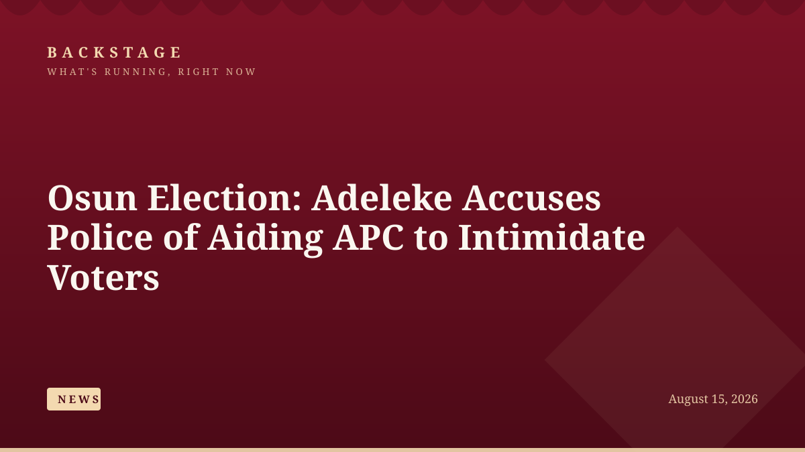
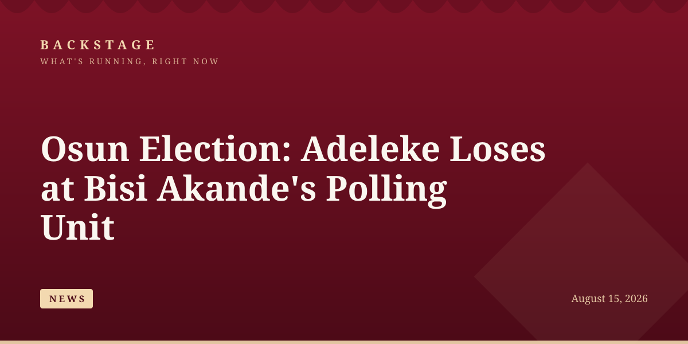
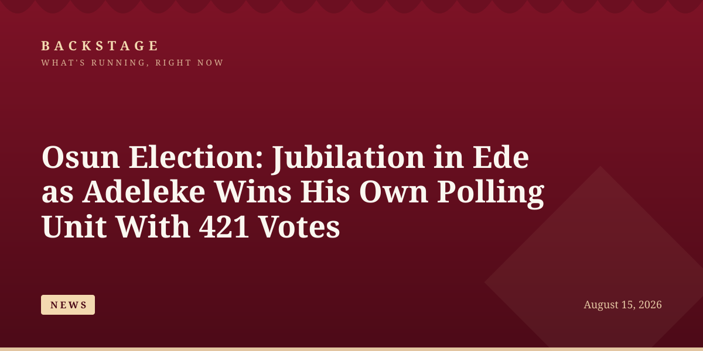
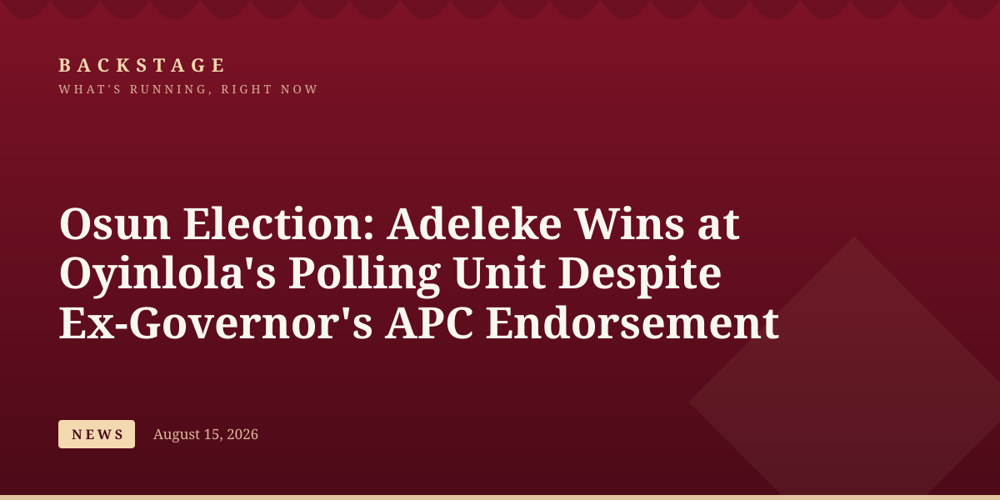

news
Defence Headquarters' X Account Hacked, Flooded With Crypto Posts
The Defence Headquarters says its official X account has been compromised and flooded with cryptocurrency posts, warning the public to disregard content until it regains control.
news
The Defence Headquarters says its official X account has been compromised and flooded with cryptocurrency posts, warning the public to disregard content until it regains control.

news
A 7.7-magnitude earthquake struck off Indonesia's Flores Island, killing at least 47 people and triggering a tsunami warning that was later lifted.

news
Iran has firmly rejected Trump's suggestion he could declare the Strait of Hormuz US territory, as a ceasefire deadline over the critical waterway approaches Monday.

entertainment
Chief Joseph Ezeokafor, father of socialite Jowizaza, has been freed after 11 days in kidnappers' custody in Anambra, with a ransom reportedly demanded of up to N1.5 billion.

news
The Katsina State Police Command foiled a bandit attack in Fulalawa village, Musawa LGA, rescuing several kidnap victims and recovering two motorcycles.

news
Roughly 45,000 litres of petrol spilled from a tanker at an Ilorin filling station on Saturday, sparking panic before firefighters contained the hazard without casualties.

sports
AC Milan came from behind twice to beat Manchester United 4-2 in Wroclaw, with Harry Maguire and Patrick Dorgu's goals wiped out by a second-half collapse.

business
The naira strengthened to N1,358.25/$ as Nigeria's external reserves climbed to $52.25 billion, their highest level in 17 years.

sports
The NFF has constituted a fact-finding committee to investigate Nigeria's recent poor performances in international competitions, including the Super Falcons' World Cup qualification failure.

news
Troops of Operation HADIN KAI repelled a multi-pronged ISWAP attack on a Forward Operating Base in Mandaragirau, Borno State, in the early hours of Saturday.

news
Governor Adeleke has accused police officers of tear-gassing voters in Modakeke and Obaagun to help the APC disrupt Saturday's Osun governorship election.

news
APC candidate Bola Oyebamiji defeated Governor Adeleke by 60 votes at the polling unit of APC elder statesman Chief Bisi Akande in Saturday's Osun election.

news
Governor Adeleke won his home polling unit in Ede North with 421 votes, triggering celebrations among supporters as counting continued across Osun State.

news
Adeleke's Accord Party defeated the APC by 40 votes at former Governor Olagunsoye Oyinlola's home polling unit, despite Oyinlola's public backing of APC candidate Oyebamiji.

Nigerian Exchange Climbs as Market Capitalisation Adds ₦305bn

NPFL Unveils EuroMatch as Title Sponsor in $7.5m Deal Ahead of New Season

Tinubu Swears In Abel Enitan as New Head of Civil Service of the Federation

Military Says About 150 Terrorists Surrender as Pressure Mounts in North-East

Ogogo’s Family Announces August 31 Fidau as Nollywood Colleagues Pay Tribute
Story tip or correction? Reach the Backstage desk.